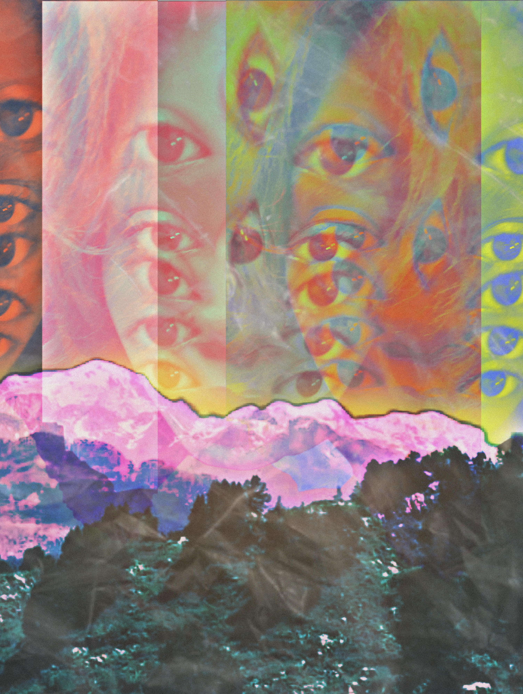

Selected Work
Hover over a project to view details.
Typographic Rhythm Poster

Contrast Study Poster

Editorial Grid Poster

Minimal Type Poster

Hierarchy Study

Distortion Typography

Spatial Rhythm Poster

but, i need it

but, i need it pt.2

The Presentation of Self In Everyday Life

I'm just a Girl

Love of my Flesh, Living Death